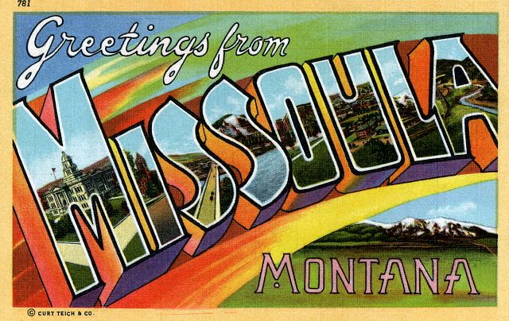

Nov. 1st and 2nd 2003 -- Spokane >
Missoula
A
light gray sky made what's left of fall's tree show pop as we drove
through the mountains to Missoula,
where Molly and Peter were
waiting for us at their new digs--a large and largely vertical house
with views of the
Rattlesnake Valley and the hills beyond. It being the day after
Halloween, Molly had ditched her prize-winning Cruella de Vil
costume for a blue satin number: a ball gown that would have passed
muster at a casting call for Gone With the Wind. Naturally, she looked
divine. Ever understated and always his own man, Peter was wearing
jeans. He looked divine, too.
Hannah was off at a friend's
birthday party; Tina was at Sussex
(Hannah's new school) dabbing trees onto a
backdrop for the fall play, Hee-Haw Hayride, a backwoods take on the
feuding Capulets and Montagues.
Back at Chez
Benson-Karlsson, Rufus was over the moon: not only did Lulu offer a
hearty, tail-wagging welcome, Dobby, the family cat, was secure enough
in her roost-ruling powers to remain sitting in an armchair where Rufus
could easily see her. She deigned to let Ru
bark at her for a surprising amount of time before standing to arch her
back, puff
out her fur, hiss, spit and split. Rufus and Lu had much to catch up on
and we left them to it. The rest of us rolled down the hill to pick up
Hannah, who was part of a gaggle of 13 year-olds raking leaves into a
huge pile and using a hammock to catapult themselves into it. We were
plied with warm pumpkin chocolate cake and vanilla ice cream, which,
we'll note, we will now expect as the traditional Missoulean welcome.
As it inevitably does at parties, talk turned to exploding pinatas.
("Why not
give one to a neighbor?" asked a teen with fading blue hair.) Who could
argue? Heartened by the neighborly spirit of Missoula's youth, we
headed
off to scoop up Tina and tour
Hannah's school.
The Benson Karlsson clan has lived in Missoula since late August, but
already it's clear that Tina is a treasured cog in the school's parent
machinery. While she went off for a turpentine nail treatment, the
play's director handed over the keys to the school and we wound our way
through the buildings and classrooms. The Zap, the campus' original
building, is the seventh and eighth grade's stomping ground. A late
1800s gem, it once belonged to a Montana governor. Now, its origins
lend to a pleasing mix of the grand and the practical: cubbies live in
a kitchen; offices occupy bedrooms. Large rooms with high ceilings,
wood paneling and trim--thankfully, spared painting over all these
years--are inviting spaces for studying. Even on a gray day, dim light
filtered through three stained glass panels on the stairway. The glass
glowed, warming its landing with shades of delicate peach and deep rose
red.
Over in the Zap, a newer addition with humble beginnings as a chicken
coop, (builders found feathers in the walls during its renovation) the
furniture fits its residents. Tiny chairs tuck under shin-high tables.
If you want to visit the Guinea Pigs, you'll have to get on the floor
to do it. Out in the courtyard, parents who looked too young to be parents
were giving up their Saturday to finish up new landscaping before the
hard freeze came. They had about an hour remaining to beat nature's
clock.
We headed back up the hill to Pete and Tina's, where all animals were
all in one piece. We wined and dined on Tina's Chicken
Picatta and Green Tea Ice Cream from The Big Dipper. After dinner,
everybody flopped in front of the tube in the upstairs viewing loft to
watch the movie, The
Chateau. (We give it a middling thumbs-up.) Sleep was the enemy, as
our friend Jamie
is so fond of
saying. The enemy won.
Sunday we awoke to a light snow, but it was enough to turn the planned
hike up to the M--a giant cement homage to the university poured high
onto a foothill--into a stomp around downtown Missoula, a small city
with a ton of charm. Lots of low-rise, turn-of-the-century brick
buildings house shops and a more-than-average number of bars. Someone
had the good sense to restore the old movie palace downtown, and
happily The Wilma
still does its bit for the community. A river does run through it: Missoula is
bisected by the Clark
Fork, and there's a lovely footpath beside it. However lovely it was,
it was also skin numbingly cold. We took refuge at Rockin
Rudy's, a warehouse-sized music store cum head shop, drawing
equally from Archie McPhee, Urban Outfitters, Ruby
Montana's and Streetlight Records. Eric bought The Best of
Caetano Veloso, and Galactic's
Ruckus. I bought some Tibetan prayer
flags to spruce up Pete and Tina's dining room. And Hannah scored a
tiny, Pepto-Bismol pink football, which made the walk to the U of M
campus downright sporty. We strolled by Molly's new alma mater: Hellgate
High (Go, Knights!), admiring the savvy of the owners
of Altered Skin, located
directly across street. Tina and Molly
looked into getting Molly's ears pierced there. They were summarily
redirected to the mall. According to the spiritually inclined
shopkeeper: "We don't do cosmetic
puncturing."
The U of M campus (Go, Griz!) was close to deserted, maybe
sleeping off the effects of Halloween. Perhaps they're all remarkably
studious. Then again, they may just have the sense to stay in out of
the snow. We did admire the pluck of the tennis players who saw the bad
weather as an opportunity to exercise free choice of which of the
university's many open outdoor courts to use. And we also appreciated
that a town can't have too many bear
sculptures. We saw two on
the campus, and we only walked a bit of it. And then there's the other
ursine homage, the huge one, down by the river. Next year, Tina has now
not-so-secret Halloween plans for this one. Let's just say she's
already purchased a lot of material suitable for tutu making. Perhaps
she can use the bear that has been wandering their neighborhood,
sleeping in trees, as a fit model.
The cold didn't let up, so we did. We had honorable intentions of
returning downtown for the Day of the Dead Parade, but the house was so
cozy and the snow was still falling. There was homework to be done,
dinner to be eaten and card games to be played. A word of advice for
anyone passing through Missoula: If you play Kings and Peasants with
Molly and Hannah, they will always be royalty and you will always be a
peasant. Accept it. Move on with your life. It's the natural order of
things.
Stats:
Hours driven: 4
Educational institutions visited: 3
Tibetan Prayer Flags purchased: 5
Bear statues viewed: 3
Bear statues viewed that will wear tutus next Halloween: 1
Peasants, if playing Kings and Peasants with Molly and Hannah: Us